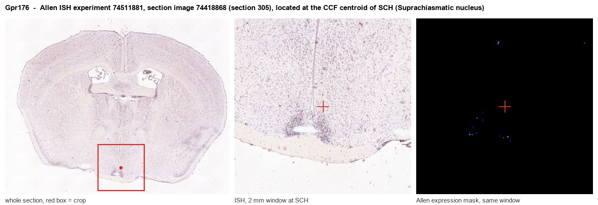
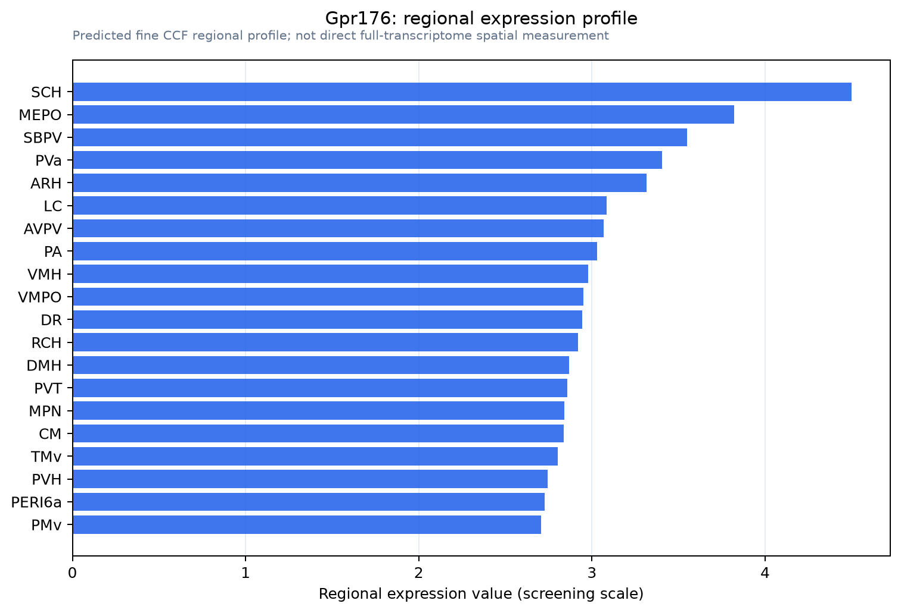

Gpr176
G protein-coupled receptor 176 (G protein-coupled receptor AGR9)
Spatial tier: REGION_BIASED · Class: GPCR · Top region: SCH (Suprachiasmatic nucleus) · Positive regions: 45/554
41.5Discovery Score
40.4Targetability Score
CEvidence grade C
What this means: Gpr176: fine CCF profile is region-biased toward SCH (top regions: SCH, MEPO, SBPV, PVa, ARH); this is a discovery lead, not direct proof.
Function in SCH: evidence, prediction, innovation
- Gene function
- GPR176 is an orphan class A G protein-coupled receptor with high constitutive, agonist-independent activity. Unusually, it couples to the Gz subtype of Gi-family G proteins, tonically lowering cAMP; its own expression is circadian and it is regulated by RGS16.
- Region function
- The suprachiasmatic nucleus is the master circadian pacemaker: retinorecipient VIP and AVP neurons entrain a cell-autonomous transcriptional clock to the light cycle and impose ~24 h rhythms on sleep, hormones, temperature and behaviour.
- Published in this region
- direct Direct and definitive. Doi 2016 showed Gpr176 is enriched in the SCN, acts through Gz to constitutively suppress cAMP in pacemaker neurons, and that Gpr176-null mice have a shortened circadian period of behaviour; Goto 2017 and Nakagawa 2020 review how the GPR176-Gz-RGS16 axis sets the pace of the SCN clock across the day.
- Predicted function
- Prediction: because GPR176 sets the cAMP tone that feeds back onto Per transcription, manipulating it should shift period rather than amplitude. SCN-restricted Gpr176 deletion is predicted to shorten free-running period and weaken the cAMP-dependent phase response to light pulses, while over-expression or a future agonist should lengthen period and dampen daytime firing; the still-unidentified endogenous ligand is the most valuable target, since a GPR176 agonist would be a period-tuning chronotherapeutic.
- Innovation
- ★★☆☆☆ 2/5 This gene-region pair is already established, so the remaining novelty is deorphanisation and cell-type-specific (VIP vs AVP) dissection rather than discovery.
- Tools
- Gpr176 knockout mice (Doi 2016); no ligand yet, so manipulation is genetic; SCN cell-type access via Vip-Cre, Avp-Cre and Nms-Cre; PER2::LUC reporter mice for ex vivo period measurement.
- References
Direct evidence located at the region

Allen ISH experiment 74511881, section image 74418868 (section 305): the section that contains the CCF centroid of Suprachiasmatic nucleus according to the Allen image-to-atlas alignment (reference_to_image), with a 2 mm window around that point. Left: whole section, red box = window. Middle: ISH signal. Right: Allen's expression-mask view of the same window. open this image in the Allen viewer
Look it up yourself: Allen Mouse Brain ISH for Gpr176Allen reference atlas: SCH (structure 286)ABC Atlas MERFISH viewer(in the ABC Atlas choose dataset MERFISH-C57BL6J-638850-CCF, colour cells by gene "Gpr176" or by parcellation_substructure "SCH")All genes confined to SCH + 3-D brain
Direct spatial evidence
MERFISH REGION LOCATOR

Regional expression figure

Predicted WMB × fine-CCF profile; not direct full-transcriptome spatial measurement.
Spatial profile
Evidence and specificity
- Evidence status
- PREDICTED_FINE
- Direct sources
- None; predicted localization only
- Exclusive threshold
- 12 positive regions out of 554
- Spatial specificity
- 0.279
- Top-region fraction
- 0.042
- Filter status
- PASS
Interpretation limits
- Cell-type-to-region projection is imputed expression, not direct spatial measurement.
- Adult reference atlases do not establish stability across age, sex, strain, state, or disease.
- Transcript abundance does not guarantee protein abundance or genetic-tool performance.